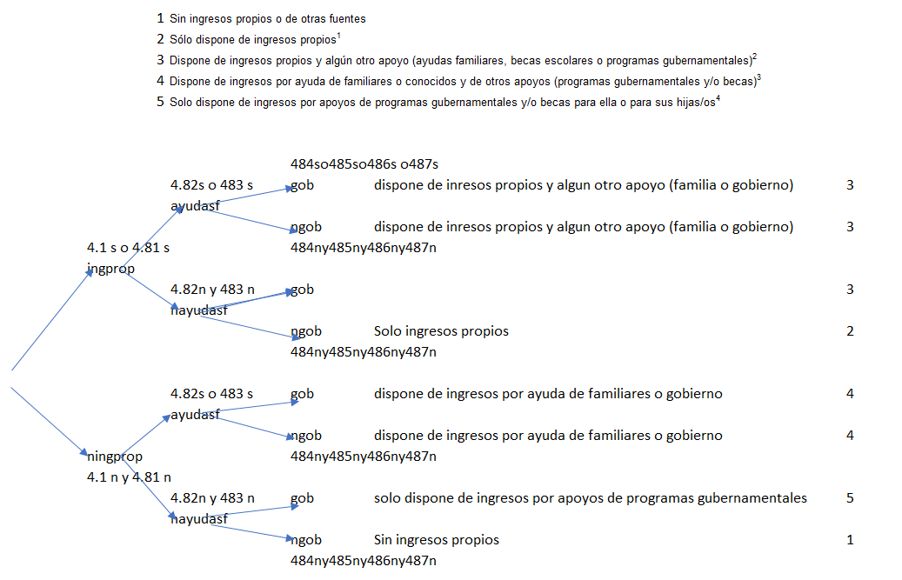
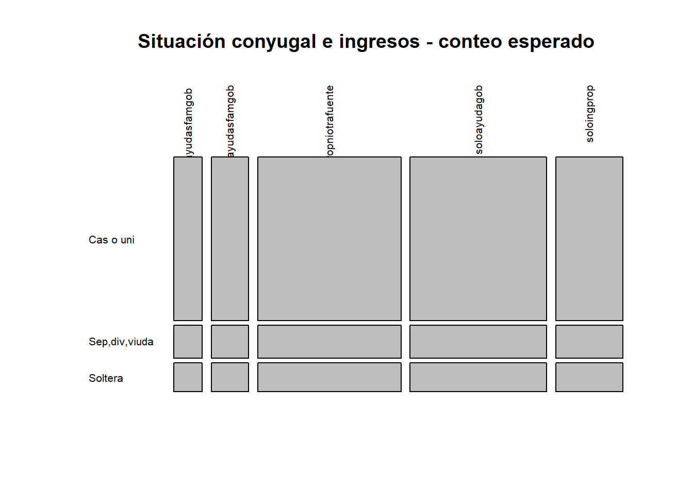
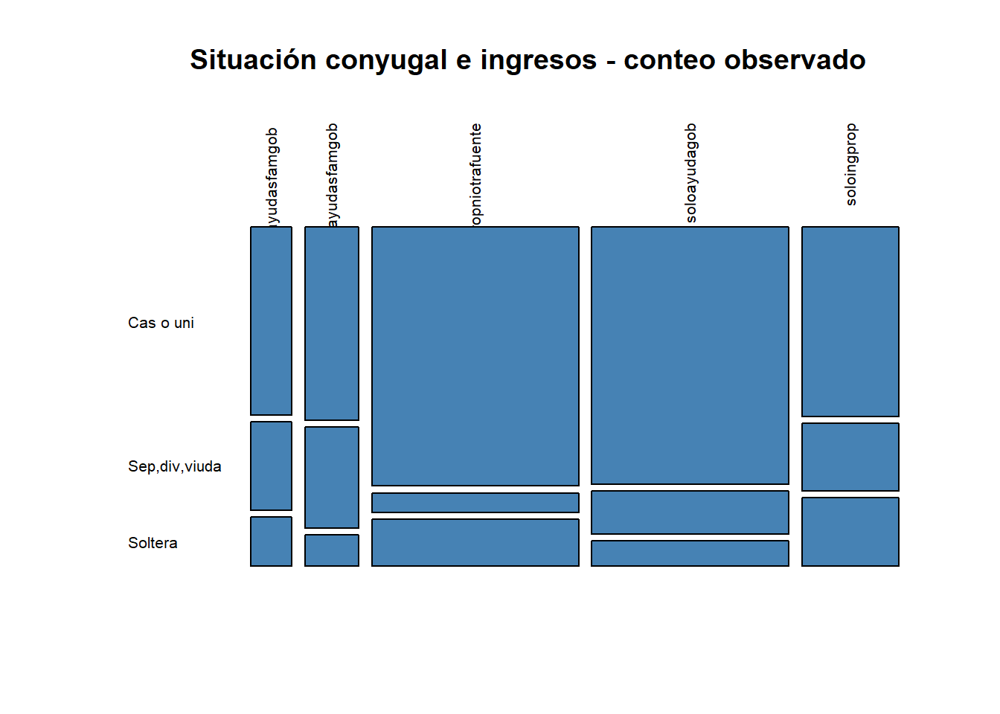

Curaduría Datos Abiertos INEGI
Variable Disponibilidad de Ingresos
Análisis de los datos encuesta y tabulados

Tablas cruzadas

Pruebas de independencia

https://rpubs.com/claudia/376771
Este artículo está licenciado bajo Creative Commons Attribution 3.0 License